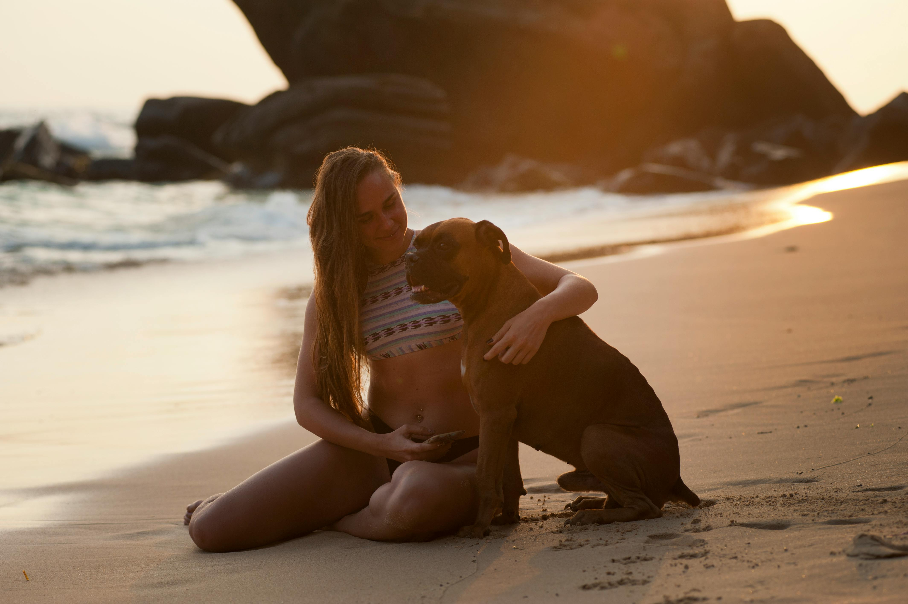

Top 10 Dog Beach Toys & Games
These beach-friendly toys are selected for buoyancy, visibility, durability, and safety — ideal for fetch, water play, and keeping pups active on sunny Florida days.

West Paw Hurley (Hybrid Ball/Bone)
A hybrid design that’s part ball, part bone — floats, bounces, and is easy for dogs to grip. Non-toxic and durable.
View on West Paw
Canine Hardware Amphibious Bumper
Floating bumper with rope handle for easy tossing. Foam + rubber construction ensures buoyancy and soft catches.
View on Walmart
KONG Aqua (Floating Retrieval Toy)
Floating version of the classic KONG — great for water fetch. You can stuff it with treats, but supervise during play.
View on Petco
Ruffwear Hydro Plane (Water Frisbee)
A soft, floating disc with foam core and bright color. Gentle on teeth and visible on the water.
View on Ruffwear
Ruffwear Gnawt-a-Stick
Modeled after driftwood — floats and bounces unpredictably. Ideal for water fetch and rugged chewers.
View on Ruffwear
Jolly Pets Tug-n-Toss Ball
Durable, floatable ball that won’t deflate — even when punctured. Great for high-energy dogs.
View on Jolly Pets
Floating Paracord Rope Toy
Hand-braided paracord toy that floats — great for tug and fetch in the surf. Extremely durable and buoyant.
View on Etsy
The Worthy Dog “Life’s a Beach” Squeaky Toy
A plush-meets-mesh hybrid toy with squeakers and a treat pocket. Fun for beach breaks and enrichment.
View on Chewy
Collapsible Silicone Water Bowl
Lightweight, foldable, and perfect for hydration during beach trips. An essential safety item for hot days.
Find on Amazon
Evapet Cooling Mat
Water-activated cooling pad helps your dog rest comfortably after a beach play session. Compact and easy to rinse.
Find on AmazonBeach Toy Safety Tips
- Supervise play — salt and sand can hide choking hazards.
- Rinse toys and your dog with fresh water after every trip.
- Choose toy sizes suited to your dog’s mouth to prevent swallowing.
- Inspect and replace worn or damaged toys promptly.

Dog Beach Packing List: What to Bring for a Safe and Fun Day
Don’t forget water, shade, first aid items, and a collapsible bowl — especially important for busy beach days.